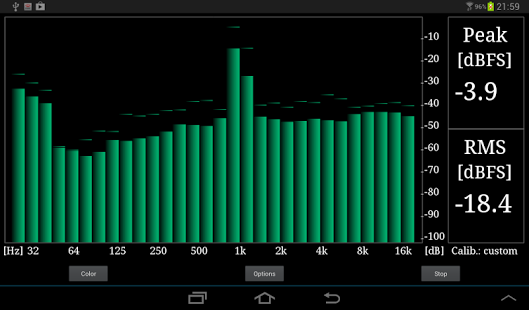
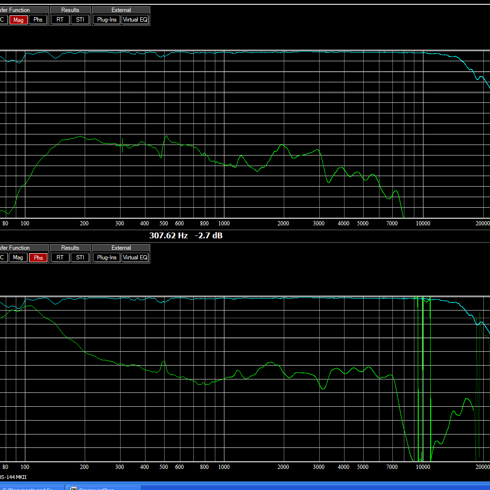
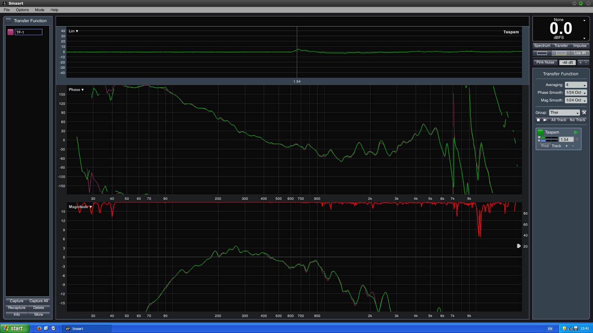
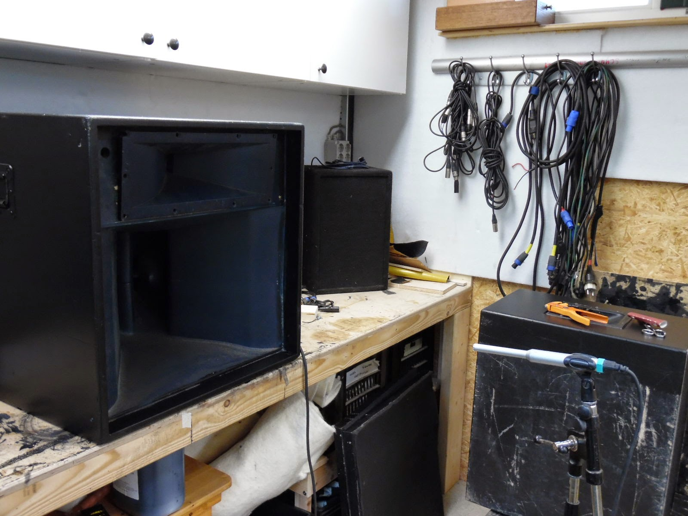
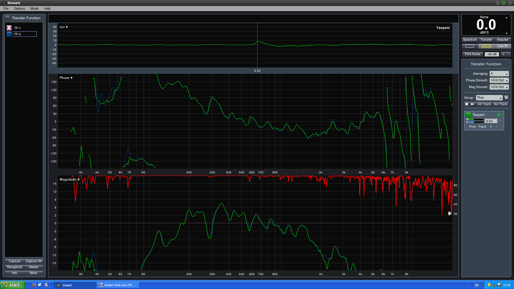

On the bench is a laptop running Smaart, a reference signal and a measurement mic in front of an old Axys T89 cabinet. The screen shows magnitude, phase and coherence, and the white noise is about to go off.
Now we know that we need both magnitude and phase plots to describe the behaviour of our system under test. So wouldn't it be nice to have some tool to measure these? For some 20 years now our PCs have been powerful enough to do the multiple fast calculations we need, using the mathematics developed by Jean Baptiste Fourier.
This clever guy proved — within certain restrictions we will talk about later — that you can also describe the behaviour of your system by looking at how it responds to a unity impulse (Dirac). So we actually have two methods for analysis: one in the frequency domain (your Bode plots), one in the time domain (the impulse response). The mathematical system to go between these two domains is known as the Fast Fourier Transform (FFT, and iFFT for the reverse).
Why dual FFT?
Enough of this math stuff, which I also hardly understand. Why dual FFT? It is perfectly possible to build an RTA (real-time analyser, you know, those dancing light bars on every crappy audio device nowadays) with a single FFT. I remember, back in the '70s, staring at the dancing lights of that precious Klark Teknik DN60 while trying to do system tuning and thinking: f..., I can hear the EQ changes I apply before I see them on that thing. Sorry, friends, no serious audio use for these toys!


Now for the dual FFT. Remember that phase is a time-related phenomenon? So if you want time information, you need a reference point. We feed our dual FFT machines a reference signal as well as the measurement signal. By mathematics (or magic, if you are more inclined to the esoteric), the software gives you pictures like this:


This is a magnitude (above) and phase (lower) plot measured with Easera Systune. But I am not biased; you may also prefer Smaart or Wavecapture or even Meyer SIM3 if you really want to fork out money. (I have used all of these; I even used to own the very last working copy of MACFoH, R.I.P. ;) There are also a zillion shareware utilities out there, with ARTA or Holm being the more serious candidates. Linux people like me are not very lucky, though. (2021 edit: got both Smaart and Systune to work under Wine.)
Dual FFT performs a subtractive measurement. I will not go into the depths of measurement techniques now, but do realise that your measurement is relative to your reference signal.
Which can be anything! So please stop the white noise terror: use your favourite music and everybody will be happier. Keep an eye on the coherence trace (the blue line in the picture above); as long as there is enough spectral content in your music source, you're just fine.
Now how to set up a measurement?
I have seen people in club venues putting their measurement mic some 20 metres away from a full-blasting PA system (in stereo) pumping white noise into a reverberant room. What do you expect to measure?
Now surely it is possible to exclude some reflections by carefully trimming your measurement window. But if you really want to make scientifically viable measurements, you will need to restrict the variables. Think: what is the wavelength of the lowest frequency you are investigating, how close is the closest reflecting wall, floor or ceiling, what part of the sound system am I investigating, etc.
OK, you're set up fine now. Let's assume you are trying to tune a loudspeaker crossover (hell, this was a tutorial about...). At this instance I am developing filters for this ancient cabinet (Axys T89).

This is a full-range measurement (with Smaart for a change) from the 12-inch horn-loaded part of this cabinet. For the moment I have left the measurement compensation delay snapped to the maximum of the IR (here you can read more about this).




This is the same measurement (of course I adjusted the gain setting) a bit further away. See the difference?


So practice, practice, practice in measuring, as long as is needed to acquire pictures that will help you in doing: next part 3, X-over adjustment →